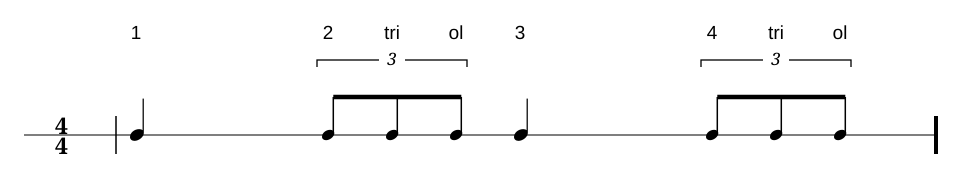
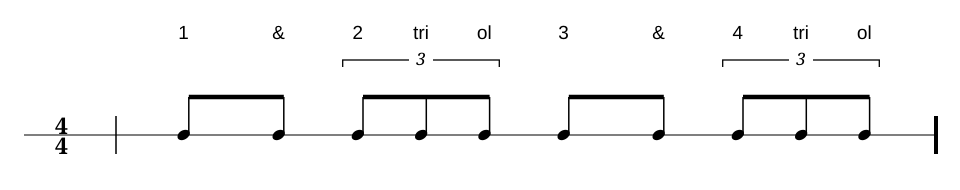
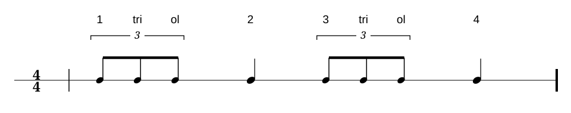
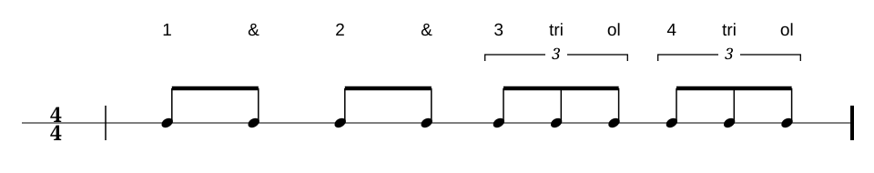
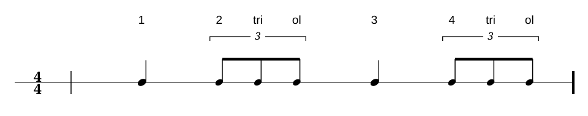
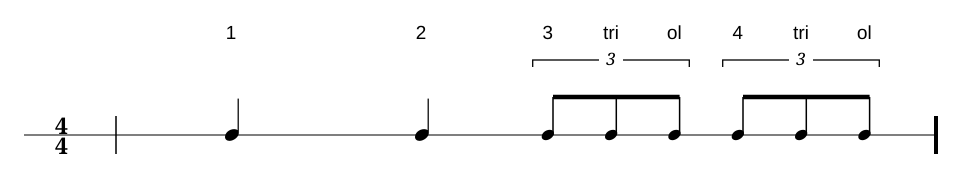
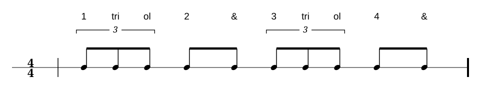

Lektion 01
Einführung
Eine Viertelnote dauert einen ganzen Schlag. Drei Achteltriolen teilen denselben Viertelschlag in drei gleich lange Teile: „Zahl tri ol“.
Das lernst du.
Du wechselst zwischen einem ganzen Viertelschlag und drei gleichmäßigen Triolenpositionen pro Schlag. Der Fuß hält den Puls, während die Stimme zwischen „Zahl“ und „Zahl tri ol“ wechselt.
Der Puls bleibt gleich: Klopfe die Viertel mit dem Fuß und sprich die Unterteilungen laut mit.
Beispiel im 4/4-Takt
Die Notation zeigt, wie die Unterteilungen auf vier gleichmäßige Viertelschläge verteilt sind.

Lektion 02
Lesen
Lies die Unterteilungen laut, während du den Viertelpuls mit dem Fuß klopfst.
Leseübung 1

Leseübung 2

Leseübung 3

Lektion 03
Hören
Höre auf den Wechsel der Unterteilungen und zähle den Viertelpuls weiter.
Höraufgabe 1

Höraufgabe 2
Höraufgabe 3

Lektion 04
Fehler finden
Vergleiche die gehörte Aufnahme mit der notierten Unterteilung.
Fehler finden 1
Fehler finden 2

Fehler finden 3
Lektion 05
Selber schreiben und spielen
Schreibe eigene Takte mit den Unterteilungen dieses Kapitels und spiele sie bei gleichmäßigem Puls.
Schreib- und Spielaufgaben folgen.